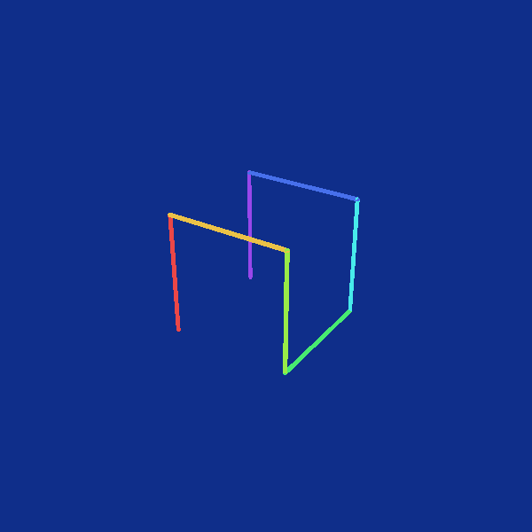
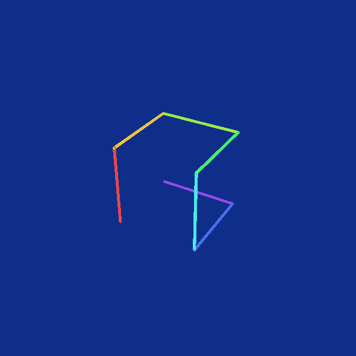

Unlike the 2D Hilbert curve, there are many ways to get a Hilbert-style space-filling curve. The following 2 starts with the same base curve, but the recursive step is different.


Both of these recursive processes produce space-filling curves. You can also mix up the recursive steps in each octant of the above two to get equally valid space-filing curves.
Another possibility is to start with a different base case. This produces yet another different space-filling curve that is in the same family.

The 3D Z-order curve is basically the same as the 2D version. Instead of interleving 2D binary cooridinates, we interleve 3D coordinates, such as $(b000, b111, b000)$ into $b010010010$. Instead of depth-first traversing a quadtree, we get the 3D curve by traversing an octree.